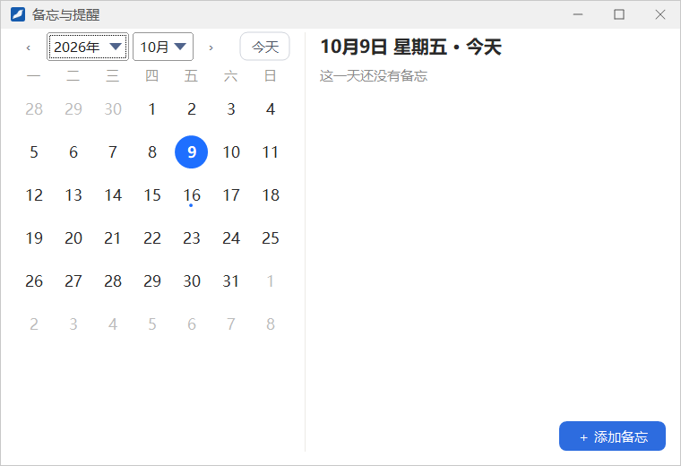
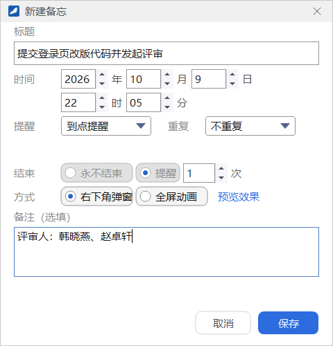
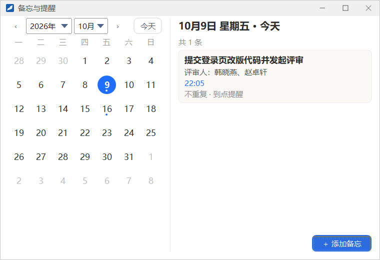
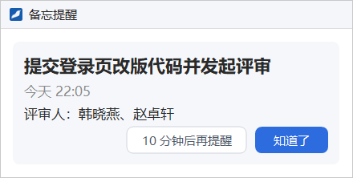
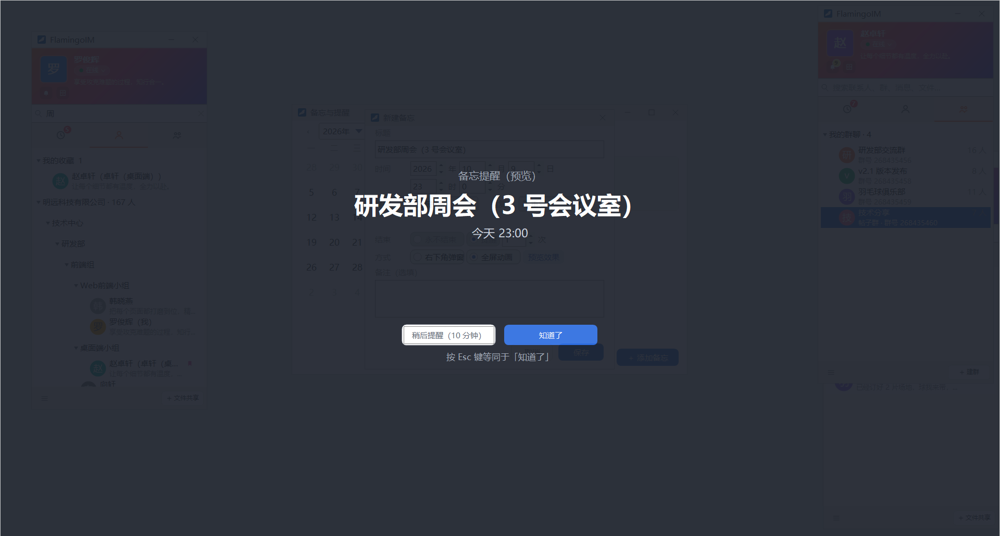

备忘与提醒
备忘是带提醒的个人日程：写下要做的事和时间，到点时客户端用右下角弹窗或全屏动画提醒你，也可以设置每天、每周等重复提醒。本章介绍个人备忘的用法；群主和管理员给群成员设置的群备忘见「群聊 → 备忘页签」。
- 适用：全体员工
- 提醒需要客户端处于登录状态
打开备忘窗口
在主面板的系统菜单里点 备忘与提醒，打开备忘窗口。

- 左侧月历：用顶部的年份、月份下拉框或两侧的 ‹ › 翻月，点 今天 回到今天。今天和选中的日期以蓝色高亮，有备忘的日期下方带一个小圆点。
- 右侧列表：顶部显示选中的日期（如「10月9日 星期五 · 今天」）和「共 N 条」，下面是当天的备忘卡片；没有备忘时显示「这一天还没有备忘」。
- 右下角的 ＋ 添加备忘 用来新建备忘。
新建备忘

- 在月历上点选日期，再点 ＋ 添加备忘，打开「新建备忘」窗口。
- 填写 标题，最多 50 个字。
- 设置 时间：年、月、日、时、分，可以直接输入，也可以用旁边的上下箭头调整。
- 设置 提醒、重复、结束 和 方式，各项含义见下表。
- 按需填写 备注（选填），最多 200 个字。
- 点 保存。
| 设置项 | 可选值与说明 |
|---|---|
| 提醒 | 到点提醒；提前 5 分钟、10 分钟、15 分钟、30 分钟；提前 1 小时、2 小时；提前 1 天 |
| 重复 | 不重复、每天、每个工作日（周一到周五）、每周（选择星期几，可以多选）、每月、每年。每月重复时取开始那天的日期，某个月没有这一天（如 31 号）时在当月最后一天提醒；每年的 2 月 29 日在平年改为 2 月 28 日 |
| 结束 | 永不结束，或 提醒 N 次 后结束（1～999 次）。选「不重复」时只提醒 1 次 |
| 方式 | 右下角弹窗 或 全屏动画。点右侧的 预览效果 可以按当前填写的内容先看一遍全屏动画 |

修改与删除备忘
鼠标停在一张备忘卡片上时，卡片上会出现 修改 和 删除 两个按钮。也可以双击卡片打开修改窗口，或在卡片上点右键选择「修改」「删除」。修改窗口的左下角同样有 删除。删除前会弹出确认框。
群备忘只能查看群主或管理员设置的、提醒你的群备忘也会出现在你的月历和卡片列表里，卡片上带有所属群名与创建人。在这个窗口里群备忘只能查看（菜单里是「查看」，没有「删除」），修改和删除要在群聊窗口的「备忘」页签里进行。
到点提醒
右下角弹窗

到了提醒时间，屏幕右下角弹出「备忘提醒」，显示标题、时间和备注。弹窗会一直留着，直到你处理它：
- 知道了：关闭这条提醒。
- 10 分钟后再提醒：10 分钟后再弹一次。
同时有多条提醒时，它们会合并在同一个弹窗里逐条列出。
全屏动画

方式选为「全屏动画」时，到点后主面板所在的显示器会逐渐变暗，屏幕中间显示大号标题和时间：
- 知道了：关闭提醒。按 Esc 键等同于「知道了」。
- 稍后提醒（10 分钟）：10 分钟后再提醒。
- 60 秒内没有任何操作时，全屏画面会收起，改为右下角弹窗继续提醒。
编辑窗口里的「预览效果」播放的就是这个画面，只是顶部的小字写着「备忘提醒（预览）」；预览时点任何按钮都只是关闭画面，不会登记稍后提醒。
错过的提醒
提醒时间到了而客户端没有打开、没有登录或者电脑在休眠时，提醒不会丢失：下次登录或电脑唤醒后，客户端会把这些提醒合并成一个右下角弹窗，标题为「你有 N 条错过的提醒」，点 全部知道了 一次关闭。只补最近 24 小时内的提醒，每条备忘只补最近的一次。
「稍后提醒」不跨越重启「10 分钟后再提醒」和「稍后提醒（10 分钟）」只在本次运行中有效，退出客户端后不会保留。
把聊天消息存为备忘
在单聊窗口里的文字消息上点右键，选 添加到备忘，会打开新建备忘窗口，并预先填好标题和备注：标题是消息的第一行，备注的第一行写明消息来自谁、什么时间，后面是消息全文。设好提醒时间后点 保存 才会真正创建。
在群聊里，这一项分为 添加到我的备忘 和 添加到群备忘，后者只有群主和管理员能看到，用法见「群聊 → 备忘页签」。
哪些消息可以添加普通文字（包括表情和 @）、Markdown 文档、代码片段和带引用的回复都可以；图片、文件、语音、大表情以及各类卡片消息不能添加。